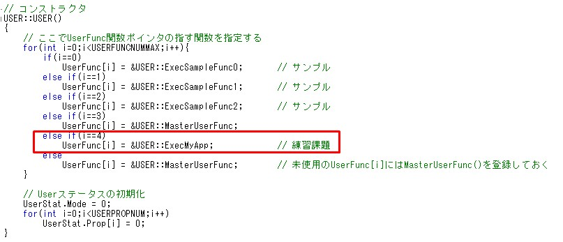
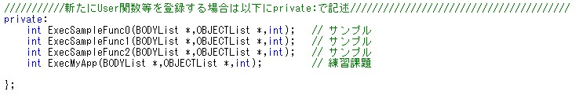
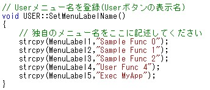
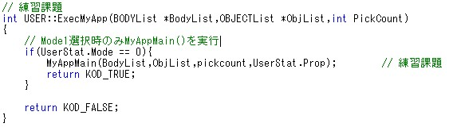
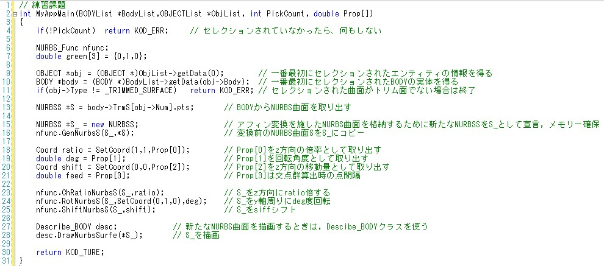
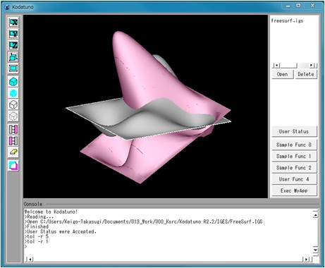
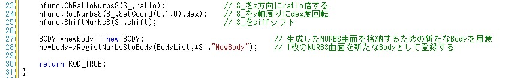
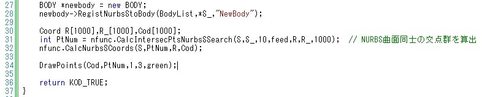
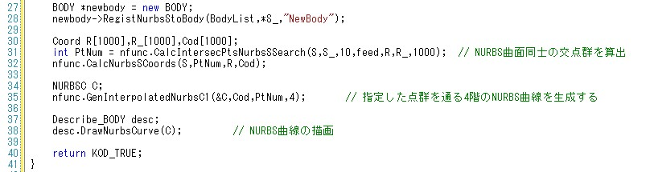
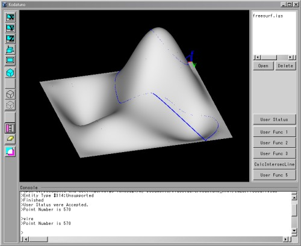

|
|
|
Prev
Index
Next |
簡単なアプリケーションの作成
このセクションでは，サンプルアプリケーションの応用として，ユーザーボタンの5番目をクリックすると，1つのNURBS曲面をz方向にr倍し,y軸周りにdeg度回転させ，z方向にhだけシフトさせて 新たなNURBS曲面を作成し，これら2つのNURBS曲面の交線を算出するアプリケーションを作成してみましょう．
このとき，"User Status"のプロパティー値には，r, deg, hと，交点間隔の4つを入力する仕様とします．
以上で、簡単なアプリケーション作成手順の説明を終わります。
- まず、UserFunc.cpp内のUSERクラスのコンストラクタに，ユーザーボタンの5番目を押すと実行される関数を登録しましょう．USER::USER()を以下のように変更します。
 - 次に、UserFunc.hにExecMyApp()をプロトタイプ宣言します。
 - また，ユーザーボタン名も変更しましょう．変更するには，"UserFunc.cpp"のUSER::SetMenuLabelName()を変更します．
 こちらの例では，"Exec MyApp"という名前に変更しました．
- UserFunc.cppの適当な位置にExecMyAppの実体を記述します。ExeSampleFunc1()を参考にして，"User Status"がMode1のときに実行されるようにしましょう． 実行される関数名は何でもかまいませんが，ここではMyAppMain()としました．
 MyAppMain()に渡す引数は，BODYList, OBJECTList, PickCount, UserStat.Propの4つが必要になります．とします。
- BODYList *BodyList
- OBJECTList *ObjList
- int PickCount
- double Prop[ ]
- MyAppMain()のプロトタイプ宣言を"SampleFunc.h"に記述します．
- 次にいよいよ，MyAppMain()の実体を書いていきます．今回は"SampleFunc2.cpp"に書いていきましょう．
 上のソースには，説明しやすいように1から順番に行番号が振ってあります．
この課題では，前例題にはない，NURBS曲面をコピーするということを行います．NURBS曲面をコピーするには，まず，コピーするための新たな箱を用意します(15行目)． 次に，NURBS_Func::GenNurbsS()関数を用いてコピーを実行します(16行目)．
18〜21行目では，"User Status"のプロパティ値を取得しています．今回は，倍率，回転角度，シフト量，交点間隔の4つを入力する仕様でしたので，Prop[0]〜[3]まで を得るようにしました．
23行目からは実際にコピーした曲面のアフィン変換を実施しています．ここは2.6.2 NURBS曲面のアフィン変換の例題を参考にしてください．
ユーザー定義関数内で新たに作成したNURBS曲線や曲面をグラフィック描画領域に描画するためには，27, 28行目の操作が必要になります．27行目では，Describe_BODYと呼ばれる BODY描画を担当するクラスを呼び出しています．28行目では，このクラスに属するDescribe_BODY::DrawNurbsSurf()関数を呼び出し，描画命令を実行しています．
とりあえずここまで書き終えたら，一度このプログラムを実行してみましょう．これまでのプログラムの変更を全て保存し、2.2 Kodatunoを動かしてみよう に沿って コンパイル、実行してください。次に、"FreeSurf.IGS"を読み込み、選択状態にします。"User Stat"を開き、Modeを1にセット、Prop1〜3までに適当な値を入れ、 "CalcIntersecLine"ボタンを押します。下図は、Prop1=2, Prop2=30, Prop3=10とした場合の結果です。 新たに生成したNURBS曲面が表示されたと思います．しかし，試していただければ分かるようにピックすることはできません．これは，新たに生成したNURBS曲面をBODYListに新たな Bodyとして登録していないためです．言い換えれば，現時点ではただ表示しているだけということになります．
そこで、新たに作成したNURBS曲面を新たなBodyとして登録してみましょう。新たに登録する場合は、 BODYクラスのRegistNurbsStoBody()関数を用います。このとき、この関数の引数として、登録するBODYListへのポインタ, 新たなBody, Body名の3つが必要になります． ここで，Describe_BDOY::DrawNurbsSurf()が消えていることに注意してください．生成したNURBS曲面をBodyとしてリストに登録すると，Kodatuno内部で描画対象として 認識してくれますので，わざわざ描画指令を送る必要がなくなります．さらに，リスト登録することによって，ピックが可能になります．- 次に、NURBS曲面同士の交点群を算出するために、NFunc.CalcIntersecPtsNurbsSSearch()関数を用います。
 - 交点群が正しく描画されたら，最後に得られた交点群からNURBS曲線を生成してみましょう．
  交線の表示が部分的におかしいのは, 交点配列がきれいにソートされていないからです．CalcIntersecPtsNurbsSSearch()関数などを用いて交点群を生成する場合は， かならずしも，順序正しく点が格納されていないため，何らかのソート用コードを記述しなければなりません．
| Copyright(C) Kodatuno Development Team, 2011 | Last modified: Nov. 11, 2011 |